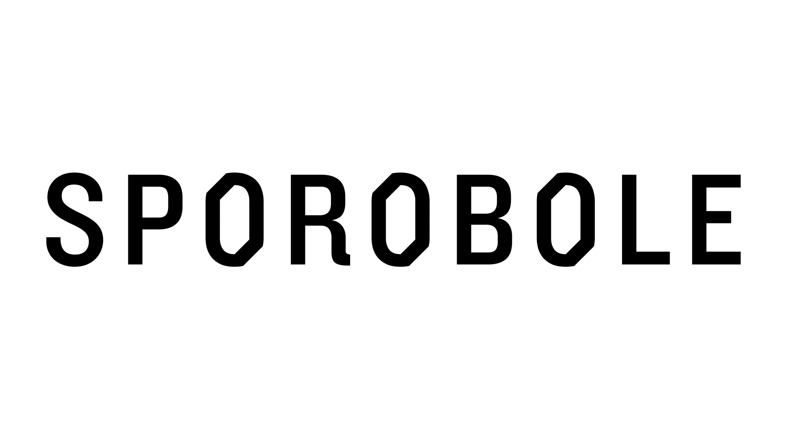

Recherche en art actuel
Penser à demain
Nous envisageons la création artistique comme révélatrice d’enjeux culturels et sociaux
Studio Labo
Recherche et création, résidence d’artiste
Nous favorisons l’émergence de questionnements à la fine pointe des théories et des pratiques artistiques
Studio Code et conception
Développement d’applications et d’outils
Nous plaçons le développement technologique au service de la création
Diffusion
Voir et entendre
Nous diffusons, nous présentons et nous rendons accessibles des projets artistiques
Ateliers éducatifs
former et se former
Nous stimulons la créativité artistique à l’aide d’outils numériques
Technothérapie
Amorcer sa transformation numérique
Nous renforcons la résilience de notre milieu en consolidant ses capacités technologiques